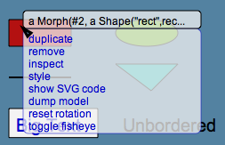

Back to IntroductionPREVIOUSSource code of this demoNEXT
Each object has a popup menu that can be invoked by clicking on the object
while keeping the Command (Alt) key down.
Note that the background of the Lively Kernel system ("the world") also
has its own popup menu.

Notes:
The top area of the popup menu displays the type of the object.
Try it yourself! Press the Command (Alt) key while clicking on
an object or the background of the world.